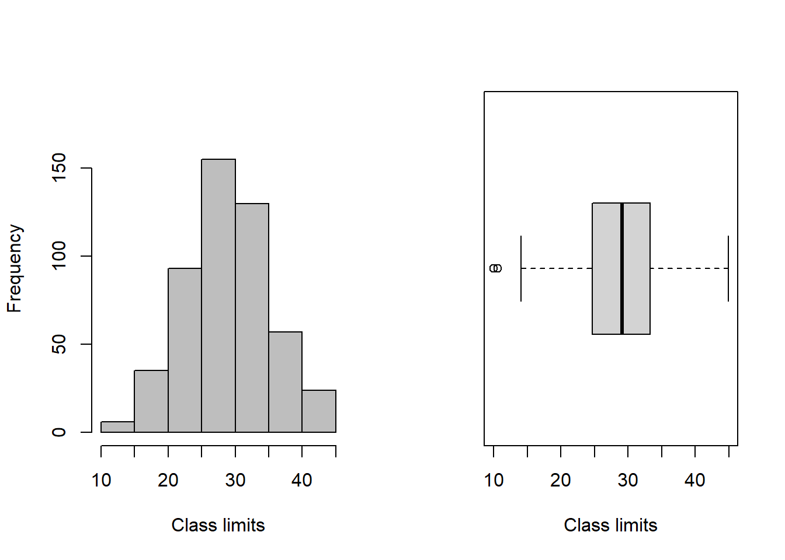

8 R Módulo 3.1 - Estatísticas descritivas e normalidade
RESUMO
A estatística descritiva tem um papel importante a desempenhar na ciência. Quando problemas específicos são tratados na ciência, os dados precisam ser coletados, analisados e apresentados de forma concisa para que outros possam se beneficiar do que foi encontrado.
Apresentação
A estatística descritiva tem um papel importante a desempenhar na ciência. Quando problemas específicos são tratados na ciência, os dados precisam ser coletados, analisados e apresentados de forma concisa para que outros possam se beneficiar do que foi encontrado. Geralmente não é possível apresentar um conjunto de dados completo em uma publicação ou em um seminário e, mesmo que fosse, é improvável isso permitisse uma boa comunicação dos resultados da pesquisa. Em vez disso, os dados são geralmente resumidos como tabelas de frequência, histogramas e estatísticas descritivas que os leitores ou ouvintes podem assimilar prontamente, mas que ainda transmitem os elementos essenciais do conjunto de dados original. O principal objetivo do cálculo das estatísticas descritivas é transmitir informações essenciais contidas em um conjunto de dados da forma mais concisa e clara possível.
8.1 Sobre os dados
Considere os dados sobre o comprimento dos brotos de Banksia ericifolia de charnecas13 na Baía de Jervis, Austrália (BRADSTOCK; TOZER; KEITH, 1997) (Figura 8.1). Existem 500 medições, um conjunto de dados formidável. Por inspeção, o comprimento mínimo do broto é 10,0 e o máximo é 44,9 cm. Esses valores definem o intervalo da amostra. Agora precisamos subdividir o intervalo em intervalos ou classes, cada um com o mesmo tamanho. Geralmente, é aconselhável arredondar o valor mínimo para baixo e o valor máximo para valores apropriados ao decidir as classes de intervalos. Nesse caso, parece sensato dividir a faixa de 10 a 45 cm em sete intervalos a cada 5 cm de largura. Se contarmos o número de brotos que se encontram em cada um dos sete intervalos, temos a base para a tabulação da frequência. A coluna de frequência foi obtida contando o número de medições que existem dentro de cada classe. A coluna de frequência percentual foi obtida representando cada contagem como uma porcentagem da contagem total. A frequência cumulativa e as frequências percentuais cumulativas foram obtidas somando progressivamente as frequências correspondentes.

Figura 8.1: Comprimentos (cm) de 500 brotos do arbusto Banksia ericifolia de charnecas na Baía de Jervis, Austrália.
8.2 Organização básica
Instalando os pacotes necessários para esse módulo
Os códigos acima, são usados para instalar e carregar os pacotes necessários para este módulo. Esses códigos são comandos para instalar pacotes no R. Um pacote é uma coleção de funções, dados e documentação que ampliam as capacidades do R (R CRAN (TEAM, 2017) e RStudio (TEAM, 2022)). No exemplo acima, o pacote openxlsx permite ler e escrever arquivos Excel no R. Para instalar um pacote no R, você precisa usar a função install.packages().
Depois de instalar um pacote, você precisa carregá-lo na sua sessão R com a função library(). Por exemplo, para carregar o pacote openxlsx, você precisa executar a função library(openxlsx). Isso irá permitir que você use as funções do pacote na sua sessão R. Você precisa carregar um pacote toda vez que iniciar uma nova sessão R e quiser usar um pacote instalado.
Agora vamos definir o diretório de trabalho. Esse código é usado para obter e definir o diretório de trabalho atual no R. O comando getwd() retorna o caminho do diretório onde o R está lendo e salvando arquivos. O comando setwd() muda esse diretório de trabalho para o caminho especificado entre aspas. No seu caso, você deve ajustar o caminho para o seu próprio diretório de trabalho. Lembre de usar a barra “/” entre os diretórios. E não a contra-barra “\”.
8.3 Importando a planilha
ATENÇÃO
Os links para baixar as planilhas necessárias para repetir esse tutorial podem ser encontrados na seção Arquivos disponíveis do Capítulo Bases de dados.
Ou, baixe aqui o arquivo brotos.xlsx
Note que o símbolo # em programação R significa que o texto que vem depois dele é um comentário e não será executado pelo programa. Isso é útil para explicar o código ou deixar anotações. Ajuste a segunda linha do código abaixo para refletir “C:/Seu/Diretório/De/Trabalho/Planilha.xlsx”.
library(openxlsx)
brotos <- read.xlsx("D:/Elvio/OneDrive/Disciplinas/_EcoNumerica/5.Matrizes/brotos.xlsx",
rowNames = F, colNames = F,
sheet = "Planilha1")
head(brotos,10)
head(brotos[, 1:5], 10)## X1 X2 X3 X4 X5 X6 X7 X8 X9 X10
## 1 28.4 29.1 25.7 26.2 25.8 30.2 26.2 35.8 33.4 29.0
## 2 25.1 36.8 29.9 38.3 27.1 32.3 29.0 27.7 28.1 28.9
## 3 29.9 36.3 26.0 21.2 19.8 36.7 21.1 34.6 29.6 32.6
## 4 25.8 23.2 28.8 38.2 32.7 38.7 33.2 24.5 21.6 28.6
## 5 35.0 25.1 24.7 29.5 24.9 29.2 19.5 20.1 30.3 38.9
## 6 36.4 31.8 31.0 39.4 28.8 31.8 28.7 37.0 25.5 19.3
## 7 29.1 21.1 30.4 31.2 38.0 39.0 19.3 27.6 19.1 32.5
## 8 33.2 26.5 38.1 14.9 33.2 27.8 24.7 24.9 25.0 33.1
## 9 26.9 22.5 25.5 33.0 19.4 26.8 24.6 37.5 19.8 43.7
## 10 34.2 33.6 42.5 19.0 25.8 34.0 34.4 42.0 35.4 31.5
## X1 X2 X3 X4 X5
## 1 28.4 29.1 25.7 26.2 25.8
## 2 25.1 36.8 29.9 38.3 27.1
## 3 29.9 36.3 26.0 21.2 19.8
## 4 25.8 23.2 28.8 38.2 32.7
## 5 35.0 25.1 24.7 29.5 24.9
## 6 36.4 31.8 31.0 39.4 28.8
## 7 29.1 21.1 30.4 31.2 38.0
## 8 33.2 26.5 38.1 14.9 33.2
## 9 26.9 22.5 25.5 33.0 19.4
## 10 34.2 33.6 42.5 19.0 25.8Exibindo os dados importados (esses comando são “case-sensitive” ignore.case(object)).
Precisaremos converter para um vetor.
## [1] 28.4 29.1 25.7 26.2 25.8 30.2 26.2 35.8 33.4 29.0 25.1 36.8 29.9 38.3 27.1
## [16] 32.3 29.0 27.7 28.1 28.9 29.9 36.3 26.0 21.2 19.8 36.7 21.1 34.6 29.6 32.6
## [31] 25.8 23.2 28.8 38.2 32.7 38.7 33.2 24.5 21.6 28.6 35.0 25.1 24.7 29.5 24.9
## [46] 29.2 19.5 20.1 30.3 38.9 36.4 31.8 31.0 39.4 28.8 31.8 28.7 37.0 25.5 19.3
## [61] 29.1 21.1 30.4 31.2 38.0 39.0 19.3 27.6 19.1 32.5 33.2 26.5 38.1 14.9 33.2
## [76] 27.8 24.7 24.9 25.0 33.1 26.9 22.5 25.5 33.0 19.4 26.8 24.6 37.5 19.8 43.7
## [91] 34.2 33.6 42.5 19.0 25.8 34.0 34.4 42.0 35.4 31.5 32.0 38.4 29.1 29.4 29.3
## [106] 26.8 32.4 25.2 28.5 29.8 31.7 22.4 21.7 20.1 21.6 23.5 33.2 33.0 29.6 36.9
## [121] 23.6 16.2 27.3 33.3 21.6 30.2 22.5 33.0 38.3 29.5 31.1 31.7 31.6 41.7 25.9
## [136] 32.3 35.7 31.6 26.0 26.6 29.1 15.8 22.1 23.2 25.4 28.4 20.2 25.5 26.9 32.7
## [151] 29.8 27.1 36.9 32.7 24.8 18.0 40.2 28.0 26.8 41.9 31.5 27.4 37.2 30.6 32.2
## [166] 34.8 28.2 31.3 34.3 32.0 20.6 27.2 25.0 26.1 34.5 44.9 40.5 32.1 40.4 35.7
## [181] 29.3 24.7 37.0 36.9 34.8 29.8 22.8 32.3 34.8 29.6 24.0 30.5 31.6 28.7 20.8
## [196] 14.6 23.4 26.3 31.9 32.5 32.4 36.4 24.1 33.1 26.3 35.7 26.4 34.7 27.5 39.6
## [211] 30.5 30.1 21.3 27.1 19.0 25.4 36.5 22.6 25.5 30.0 29.2 30.2 20.8 30.3 27.8
## [226] 32.9 28.2 20.6 33.6 22.2 26.1 29.7 32.0 22.2 29.2 21.5 31.4 43.1 35.9 14.9
## [241] 38.8 21.9 25.6 29.7 29.9 32.5 30.4 29.2 40.9 14.1 22.4 19.9 34.8 33.4 28.0
## [256] 29.1 27.2 18.8 36.2 27.8 29.9 21.8 33.1 30.4 30.8 33.9 27.1 27.6 37.2 30.9
## [271] 28.3 34.3 34.0 29.0 30.9 24.4 29.0 25.4 30.5 31.1 26.3 38.3 24.8 23.5 29.3
## [286] 37.8 29.9 28.6 27.4 29.9 24.3 20.7 22.5 39.5 32.0 27.6 36.3 22.0 28.4 19.1
## [301] 16.8 43.9 27.9 44.4 29.7 23.0 26.8 43.4 29.4 26.7 27.8 33.1 34.9 20.5 25.4
## [316] 10.0 28.2 31.0 10.6 28.4 21.9 27.0 26.5 29.2 24.9 18.4 24.1 28.3 29.0 29.1
## [331] 26.2 32.6 22.3 31.7 37.1 35.6 19.5 26.9 24.8 19.2 29.9 42.1 36.6 25.5 34.2
## [346] 22.4 40.5 21.2 32.3 31.5 29.3 34.8 34.8 22.6 33.6 23.0 33.8 21.9 31.6 16.5
## [361] 31.6 26.8 37.3 23.2 20.5 17.6 25.0 41.9 21.8 34.4 23.2 27.6 34.3 26.7 28.1
## [376] 24.7 34.2 15.7 27.2 37.5 32.1 25.5 34.7 43.7 31.6 37.9 27.4 17.0 19.4 24.6
## [391] 20.3 22.4 37.7 29.4 36.0 39.2 26.2 25.7 28.2 22.1 27.8 36.5 23.7 28.6 23.8
## [406] 16.2 38.0 22.1 44.0 20.2 22.9 41.5 30.4 36.1 32.7 30.1 39.9 22.3 26.8 31.4
## [421] 32.5 31.4 18.8 19.1 24.2 29.3 19.7 36.7 24.1 33.9 24.5 22.8 29.9 34.5 33.4
## [436] 22.8 30.8 22.1 38.1 33.5 36.5 33.5 28.6 24.9 24.3 25.7 19.2 34.5 40.6 25.8
## [451] 39.4 33.3 21.9 29.6 27.0 30.2 17.1 15.8 22.8 16.5 24.2 21.2 25.8 29.8 24.7
## [466] 30.6 38.1 33.3 26.8 16.5 23.2 24.5 29.9 26.0 40.5 30.0 30.3 33.9 34.9 18.8
## [481] 28.3 40.2 30.9 22.0 34.1 26.2 19.6 33.6 26.3 25.1 29.3 31.9 43.0 31.9 33.9
## [496] 20.0 39.6 34.3 28.8 34.2E agora visualizando nossos dados.
Tendo em mãos o conjunto total de 500 comprimentos medidos de brotos de Banksia, agora vamos tirar uma subamostra aleatória de uma parte dos 500 valores. Essa subamostra é tirada usando o comando size= no código subsequente, que estabelece o tamanho da subamostra a ser tirada do total de dados. Esse tamanho é estabelecido no quiz. Inclua esse valor de acordo com o que é pedido no quiz. Por exemplo, se for pedido uma subamostra de 150 comprimentos, então size = 150. Nesse tutorial usaremos todos os 500 comprimentos.
set.seed(666)
brotos_sub <- sample(brotos_v, size = 500, replace = F) #atualize o valor de 'size=' se necessário
brotos_sub## [1] 21.1 30.2 34.0 36.0 27.3 34.6 15.8 19.4 31.6 26.6 31.5 38.9 31.1 32.0 29.9
## [16] 24.5 21.2 19.3 22.1 24.7 24.7 37.0 22.4 32.5 35.9 36.9 24.2 33.0 27.6 22.8
## [31] 26.5 31.6 32.3 38.1 27.4 32.3 24.8 25.5 33.1 34.5 24.4 27.1 43.9 28.6 28.4
## [46] 33.4 29.3 24.9 36.2 24.6 30.0 32.6 25.6 26.0 25.8 37.0 26.4 22.5 23.2 38.2
## [61] 23.0 44.4 27.6 20.2 29.0 25.9 22.3 27.4 14.9 33.3 40.9 33.5 36.3 28.0 28.4
## [76] 41.5 28.5 34.8 29.1 31.6 36.7 30.1 35.4 19.2 39.4 16.5 25.1 28.4 31.9 16.2
## [91] 31.7 29.3 33.9 22.3 33.6 25.5 33.0 30.0 33.3 34.0 44.0 29.5 33.6 26.7 42.0
## [106] 33.2 24.8 26.9 25.4 43.0 29.4 15.8 28.8 39.5 31.8 20.3 38.3 19.8 37.8 26.7
## [121] 23.0 19.8 39.6 18.4 31.0 29.1 24.0 32.4 22.6 30.9 26.2 29.1 28.2 33.4 25.7
## [136] 30.9 34.8 34.1 24.1 29.9 20.0 29.3 28.7 28.6 36.5 25.1 17.1 24.7 29.2 38.7
## [151] 26.8 30.6 17.0 25.5 26.2 31.5 32.5 34.7 30.2 36.6 36.5 29.1 32.3 35.0 33.9
## [166] 19.1 25.0 26.1 40.2 30.4 31.4 33.6 37.5 29.8 20.8 29.3 39.6 28.4 31.0 24.9
## [181] 27.5 33.4 33.3 34.3 21.6 40.5 29.4 26.3 22.5 42.5 20.5 44.9 29.8 30.4 28.6
## [196] 27.6 39.4 33.2 34.2 20.1 18.8 26.8 22.9 25.7 21.9 34.9 34.8 33.2 40.6 26.9
## [211] 20.2 19.1 27.2 23.2 37.3 32.5 25.4 32.0 34.5 29.7 28.1 31.2 27.2 25.8 27.0
## [226] 26.3 32.2 43.7 42.1 38.4 19.0 28.9 31.8 34.5 22.1 29.0 25.2 38.1 29.2 34.3
## [241] 27.9 24.5 34.4 40.2 36.1 29.6 33.1 28.8 22.8 38.0 20.1 28.6 34.4 30.5 19.5
## [256] 30.2 30.4 22.4 35.6 17.6 28.2 29.5 37.7 19.5 28.0 37.1 20.6 34.3 40.5 27.8
## [271] 29.9 27.1 36.9 25.0 29.9 32.7 33.2 24.7 30.9 27.0 29.9 29.6 29.7 23.8 22.2
## [286] 34.8 38.8 31.1 26.8 19.0 22.4 36.9 35.7 22.0 24.1 26.1 34.3 25.5 18.0 41.7
## [301] 29.8 32.0 31.4 21.8 27.7 33.1 28.7 29.2 31.6 23.6 34.2 25.8 21.3 26.3 23.5
## [316] 21.6 32.7 27.8 32.7 30.3 16.8 33.0 10.0 30.4 25.4 26.2 22.1 37.5 26.0 33.5
## [331] 29.0 36.7 29.8 24.8 31.9 32.6 36.4 32.1 31.5 33.8 43.4 29.4 24.2 25.0 34.9
## [346] 22.0 24.9 16.2 28.3 16.5 29.1 24.6 19.3 25.8 29.0 29.3 29.9 32.7 35.8 32.3
## [361] 19.9 30.2 21.2 24.3 32.5 27.6 25.8 39.9 34.7 25.5 29.3 21.9 23.2 26.2 19.4
## [376] 19.2 32.1 26.3 26.8 38.0 28.3 34.8 19.6 35.7 35.7 23.2 32.9 27.4 22.8 40.4
## [391] 37.9 28.2 43.7 21.7 21.1 31.6 24.9 25.5 29.6 40.5 39.2 39.0 29.1 33.9 25.7
## [406] 29.6 29.7 19.7 38.3 22.6 36.4 16.5 28.3 30.8 21.2 14.9 34.8 33.6 24.1 25.4
## [421] 43.1 20.7 30.3 41.9 31.3 27.1 34.2 27.8 18.8 31.7 30.6 27.8 21.6 30.1 30.8
## [436] 27.2 28.8 37.2 14.6 18.8 26.9 22.1 14.1 25.1 22.2 36.5 23.4 29.9 33.9 24.3
## [451] 33.1 26.2 28.1 24.5 34.2 15.7 32.0 22.8 21.9 26.0 23.2 20.8 21.5 38.1 30.3
## [466] 19.1 31.6 27.1 32.4 23.5 36.8 37.2 21.8 26.8 31.9 22.4 24.7 20.6 30.5 26.8
## [481] 30.5 29.0 26.5 29.2 31.4 20.5 26.8 10.6 27.8 21.9 28.2 23.7 29.9 29.9 36.3
## [496] 31.7 38.3 29.2 22.5 41.9Para fazermos uma tabela de frequência do comprimento dos brotos carregamos o pacote fdth e pedimos a função range que retorna o valor máximo e mínimo no vetor.
## [1] 10.0 44.9Agora é necessário que você substitua os valores de range 10, 44.9 nos valores de início e fim da distribuição de frequência. Os comandos abaixo criam uma tabela de frequência chamada tf com valores máximos e mínimos definidos por range(brotos_v) em intervalor definidos por h=5, e o comando print(tf) exibe a tabela de frequência.
tf <- fdt(brotos_sub, start=10, end=45, h=5) #tabela de frequência
#?fdt #atente para o uso de k, por exemplo tf <- fdt(brotosv, k=5)
print(tf)## Class limits f rf rf(%) cf cf(%)
## [10,15) 6 0.01 1.2 6 1.2
## [15,20) 35 0.07 7.0 41 8.2
## [20,25) 93 0.19 18.6 134 26.8
## [25,30) 155 0.31 31.0 289 57.8
## [30,35) 130 0.26 26.0 419 83.8
## [35,40) 57 0.11 11.4 476 95.2
## [40,45) 24 0.05 4.8 500 100.0Class limits = limites de classe, f = frequência de classe, rf = frequência relativa da classe, rf(%) = frequência relativa percentual da classe, cf = frequência cumulativa da classe, cf(%) = frequência cumulativa percentual da classe.
Se contarmos o número de brotos que se encontram em cada um dos sete intervalos, temos a base para a tabulação da frequência. Essa tabulação é mostrada na tabela gerada pelos códigos acima. A coluna de frequência foi obtida contando o número de medições que existem dentro de cada classe. A coluna de frequência percentual foi obtida representando cada contagem como uma porcentagem da contagem total. A frequência cumulativa e as frequências percentuais cumulativas foram obtidas somando progressivamente as frequências correspondentes.
8.4 Gráficos de histograma e boxplot
No código abaixo se define o layout dos gráficos para serem exibidos lado a lado, e na sequência criamos um gráfico de histograma com base na tabela de frequência tf. O comando boxplot() cria um gráfico de boxplot para os valores em brotos_v. O argumento “horizontal = TRUE” indica que o boxplot deve ser horizontal.
par(mfrow = c(1,2)) #gráficos lado a lado
plot(tf) #distribuição de frequências
boxplot(brotos_sub, horizontal = TRUE,
xlab="Class limits") #boxplot
par(mfrow = c(1,1)) #gráficos de volta ao normal
Se você recebeu a mensagem de erro “Error in plot.new() : figure margins too large”, aumente o tamanho da janela do gráfico e execute as últimas três linhas de comando novamente.
8.5 Sumário estatístico geral
## Min. 1st Qu. Median Mean 3rd Qu. Max.
## 10.00 24.70 29.10 28.97 33.23 44.90
## [1] 6.373581
## [1] 40.62254Script limpo
Aqui apresento o scrip na íntegra sem os textos ou outros comentários. Você pode copiar e colar no R para executa-lo. Lembre de remover os # ou ## caso necessite executar essas linhas.
## rm(list=ls(all=TRUE)) #limpa a memória
## install.packages("openxlsx") #importa arquivos do excel
## install.packages("fdth")
library(openxlsx)
## getwd()
## setwd("C:/Seu/Diretório/De/Trabalho")
library(openxlsx)
brotos <- read.xlsx("D:/Elvio/OneDrive/Disciplinas/_EcoNumerica/5.Matrizes/brotos.xlsx",
rowNames = F, colNames = F,
sheet = "Planilha1")
head(brotos,10)
head(brotos[, 1:5], 10)
## #View(brotos)
## print(brotos[1:5,1:5])
## brotos
## str(brotos)
## mode(brotos)
## class(brotos)
brotos_v <- c(t(brotos))
brotos_v
## #View(brotosv)
## print(brotos_v)
## brotos_v
## str(brotos_v)
## mode(brotos_v)
## class(brotos_v)
set.seed(666)
brotos_sub <- sample(brotos_v, size = 500, replace = F) #atualize o valor de 'size=' se necessário
brotos_sub
library(fdth)
range(brotos_sub) #retorna o valor máximo e mínimo
#?range
tf <- fdt(brotos_sub, start=10, end=45, h=5) #tabela de frequência
#?fdt #atente para o uso de k, por exemplo tf <- fdt(brotosv, k=5)
print(tf)
par(mfrow = c(1,2)) #gráficos lado a lado
plot(tf) #distribuição de frequências
boxplot(brotos_sub, horizontal = TRUE,
xlab="Class limits") #boxplot
par(mfrow = c(1,1)) #gráficos de volta ao normal
summary(brotos_v)
#?summary
sd(brotos_v) #desvio padrão
var(brotos_v) #variânciaBibliografia Geral
O RStudio Cloud é uma plataforma online que fornece um ambiente de desenvolvimento integrado para o R, permitindo que os usuários executem análises, desenvolvam código e colaborem com outras pessoas, sem a necessidade de instalar o R e o RStudio em seus próprios computadores. É uma solução conveniente e acessível, especialmente para iniciantes ou usuários que desejam compartilhar projetos e colaborar de forma eficiente.↩︎